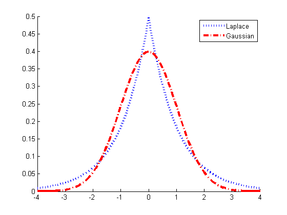

Compare a Gauss and Laplace distribution
% This file is from pmtk3.googlecode.com xs = -4:0.1:4; mu = 0; b = 1; pLap = 1/(2*b)*exp(-abs(xs-mu)/b); pGauss = gaussProb(xs,0, 1); figure; hold on plot(xs, pLap, 'b:', 'linewidth', 3); plot(xs, pGauss, 'r-.', 'linewidth', 3); legend('Laplace', 'Gaussian') printPmtkFigure('laplaceVsGauss')